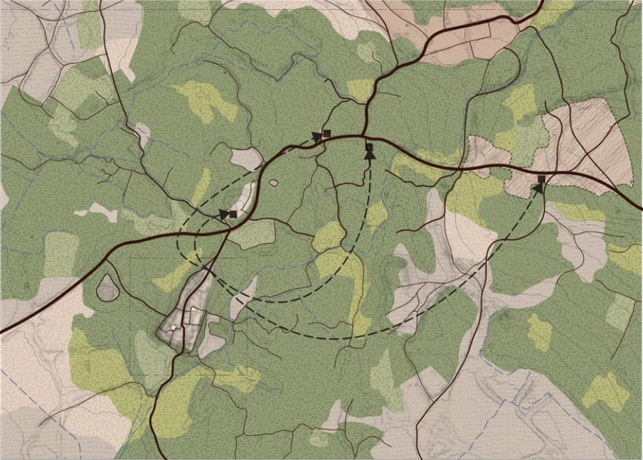
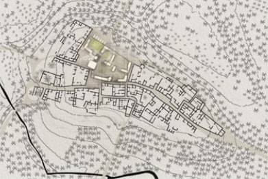
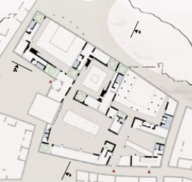

Hazem Radhouani

Al-Arg
Build from what exists.
Degree thesis awarded Highest Honours with a unanimous jury at ENAU, Université de Carthage, 2024. The project proposes a strategy for the rehabilitation of the village of ARG, an abandoned settlement in the Tunisian interior whose population evacuated over the course of the twentieth century, leaving behind an intact but deteriorating fabric of vernacular stone architecture.
Highest Honours · Unanimous Jury · ENAU, Université de Carthage · June 2024
-

-

-

Education and practice, 2018–2026
- EducationFirst Cycle Diploma · Bachelor's equivalentWith Distinction
- PracticeSociété de Préservation du Village d'ARG · TunisiaIntern & Volunteer
- Practice2ADP Salim Ben Rejeb Architectes · TunisArchitectural Intern
- PracticeYassir Khalil Studio · CasablancaArchitectural Intern · Full time
- EducationFinal Year Architectural ThesisHighest Honours
- PracticeStudio BELEM · ParisArchitectural Intern · Ongoing
- Research and distinctionsSakura Science Program · JapanMost Appreciated Research
- Research and distinctions2nd Place · CompetitionZenata Station
- EducationNational Architecture Diploma (DNA) · Master's equivalentHighest Honours